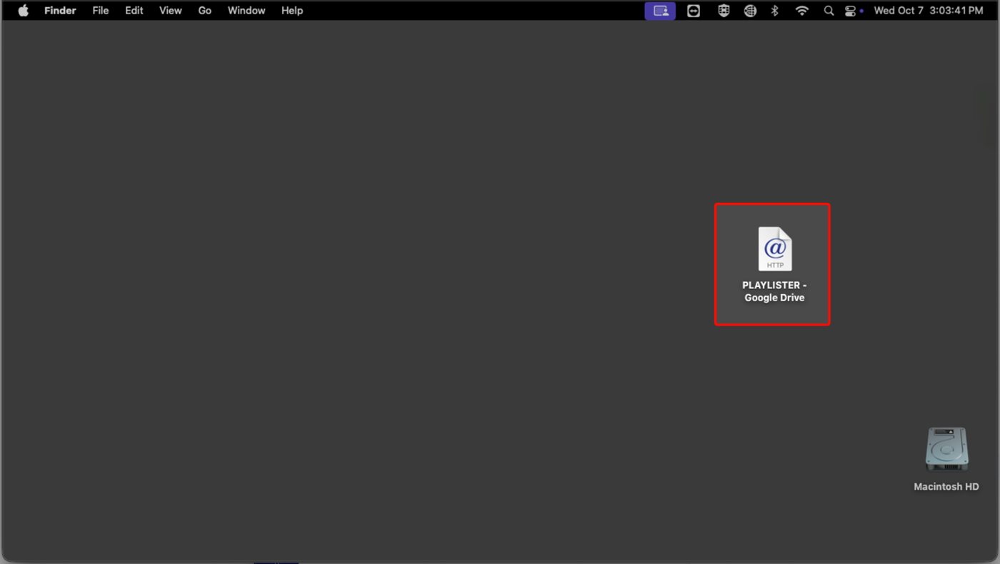

eKidz Elementary · Perimeter
Elementary Theatre
Starting up and loading video in the Toronto Elementary Theatre.
Video Startup
Getting this week's elementary video on the projector, running it for both experiences, and leaving the room the way you found it.
The whole room is one Mac and one projector. The video is a single file per week. It carries its own countdown and on-screen cues ("NEXT: Welcome to eKidz", "NOW: Room opening activities"), so the file is the room's run of show. Your job is to get the right file playing from the top, full screen, at the right time.
1
Power On the Projector
BenQ projector · the white BenQ remote
- Power on the BenQ projector with the white BenQ remote.
- Let it finish its warm-up before you judge the picture. The Mac's desktop shows up once it's done.
2
Check the Mac Is Logged In
Elementary Theatre Mac · Apple keyboard and mouse
- Use the Apple keyboard and mouse. They're there for this Mac.
- The Mac stays on between Sundays, so it should already be on the desktop. If it's at a login screen, sign in with username production and password elevation123, all lowercase, one word.
3
Open PLAYLISTER
Mac desktop · a Google Drive link that opens in Chrome
- Double-click PLAYLISTER – Google Drive on the desktop.
- Chrome opens the shared PLAYLISTER folder. It holds that week's two files, elementary and preschool.

Telling the two apart: the filename carries month, room, and week. EM is elementary and PS is preschool, so OCTEMWK1_90.mp4 is October, elementary, week 1. Preschool's file isn't for this room.
4
Download the Elementary File
Chrome · Google Drive, PLAYLISTER folder
- On the elementary file, click More actions (⋮) → Download.
- Drive warns "Can't scan file for viruses" because the file is too big for it to scan. Click Download anyway. This is expected for every week's file.
Start this early. The file is several gigabytes (6.3 GB in October week 1), so the download takes real time on the church network. It's the longest wait in this procedure.
If the download fails or won't start: the Mac is probably out of space. Each week's file stays in Downloads, so empty the Downloads folder in Finder (and the Trash), then download again. Delete old copies whenever they pile up.
5
Open in QuickTime, Play, Full Screen
Chrome download list → QuickTime Player
- When the download finishes, open Chrome's download list (the download icon in the toolbar) and click the file to open it in QuickTime. If there's more than one copy, play the most recent one.
- Press play, then put QuickTime in full screen (⌃⌘F, or View → Enter Full Screen).
6
Reset for the 11:30 Experience
QuickTime · between experiences
- When the first experience is done, pause and return to the start of the video.
- Hold it paused at the top, then play it again for the 11:30 experience.
Why from the top: the countdown and the NEXT / NOW cues are part of the video, so they only line up with the room if every run starts from 0:00.
7
Shut Down the Room
After the 11:30 experience
- Close QuickTime, then close Chrome.
- Turn the projector off with the white BenQ remote. Leave the Mac on.
- Put the keyboard and mouse back on the Mac's side of the desk.